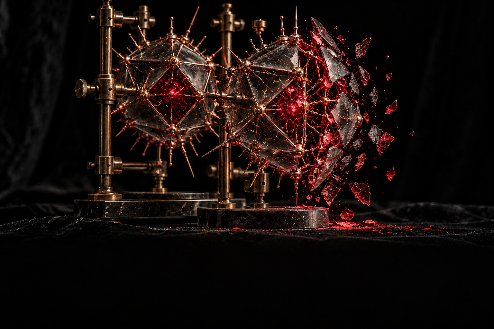

The signature was checked. Then the original changed.
One object stays with the caller. A private copy carries the checked values into the decision. Follow two recorded regressions through that separation.

VIRION STUDY / ORIGINAL ILLUSTRATION
Loading recorded execution…PLAYBACK / NO TOOL EXECUTION
01 / 04
Signed
Copied
Mutated
Decided
Manual steps or one playback through the record.
01 / CALLER MEMORYORIGINAL
The mutable original
NONCE SHAPE / DATA-DERIVED
nonce
—
expires_at
—
02 / VERIFIER MEMORYNOT COPIED
The checked snapshot
SAME NONCE / PRIVATE OWNERSHIP
nonce
—
expires_at
—
STEP 01 / SIGNED
SIGNED VALUES
SQLITE / CONSUMED NONCESClock callback not reached